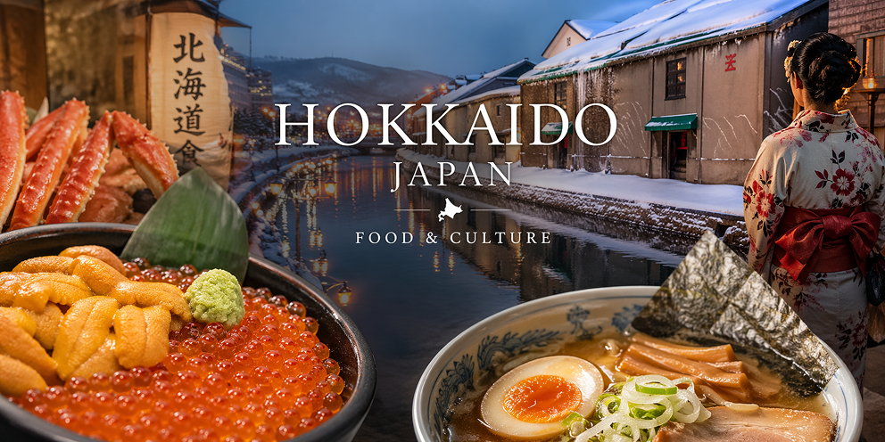
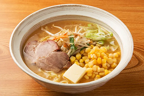
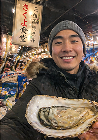
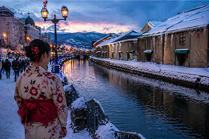
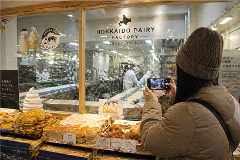
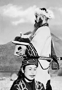

Food and Culture
From freshwater sushi and ramen to the Ainu people and culture.
What food is Hokkaido known for?
From fresh water seafood and sushi to hot bowls of ramen with different broth styles. Hokkaido is known for producing half of the countries dairy supply. The fertile lands make farming feasible to produce wheat, potatoes, corn, onions, and melons. Finally, Genghis Khan (Jingisukan) is a dish consisting of mutton and vegetables cooked in a dome-shaped grill.

Seafood
Thanks to the vast seas that surround Hokkaido, some of the seafood available includes shrimp, squid, sea urchin, salmon, mackerel, crab, octopus, and scallops. The cold waters give sushi a fresh taste and make seafood one of the best local attractions in Japan.
Dairy Products
Hokkaido is often referred to as the Dairy Kingdom because a large amount of Japan’s milk and dairy products originate from Hokkaido. Hokkaido is famous for high-quality dairy products, including milk, butter, cheese, and soft-serve ice cream.
Ramen
Sapporo city is known for miso-based ramen. Asahikawa city is known for seafood, pork, chicken, vegetable, and soy sauce broth. Hakodate city is known for its gentle salt-based broth.




The Ainu People
The Ainu are an Indigenous people that were colonized by Japan in the 20th century. Although most intermarried with the Japanese, their culture is still celebrated in museums and festivals.

Start Your Journey
Planning your first trip to Japan? Use this guide to explore Hokkaido’s top destinations and create a smooth and unforgettable travel experience.